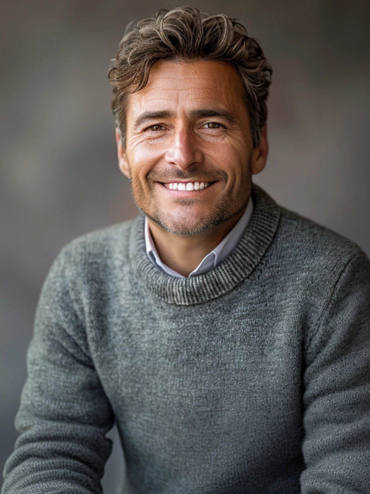

Yan Makoto
-
 (44)9999-9999
(44)9999-9999
-
 Maringá
Maringá
-
 hello@reaalygreatsite.com
hello@reaalygreatsite.com
-
link.ee/CurrículodeCarlos
Segunda a Sexta das 08h as 11h/ 14h as 18h

Um pouco sobre mim
Psicóloga Clínica
Clínica Fala Aberta, Rio de Janeiro,Rj
Julho de 2021 - Atual
- Efetuei 5 sessões diárias de psicoterapia de apoio, aplicando programas de estimulação cognitiva;
- Acompanhei situações problemáticas e fiz intervenções em crise, controlando os casos sem maiores problemas;
- Criei planos de intervenção personalizados conforme as necessidades individuais de mais de 30 pacientes;
- Colaborei com a equipe em iniciativas de dinamização de sessões e desenvolvimento de materiais;
- Recebi avaliação de 95% de satisfação dos pacientes.
Psicóloga escolar.
Escola Secundária Gilberto Filho, Rio de Janeiro, RJ.
Fevereiro de 2019 - Janeiro de 2021.
- Atendi cerca de 6 alunos diariamente, oferecendo suporte personalizado para lidar com os seus problemas;
- Identifiquei e avaliei situações de risco na escola, desenvolvendo 3 planos de intervenção que foram bem-sucedidos em evitá-las;
- Promovi a inclusão de 15 estudantes com baixo nível de socialização, por meio de atividades extracurriculares específicas para os seus interesses;
- Prestei apoio psicopedagógico para potenciar o sucesso acadêmico dos alunos, com um aumento de 30% das notas dos alunos participantes.
Formação acadêmica.
Graduação em Psicologia.
Pontifícia Universidade Católica, Rio de Janeiro, RJ.